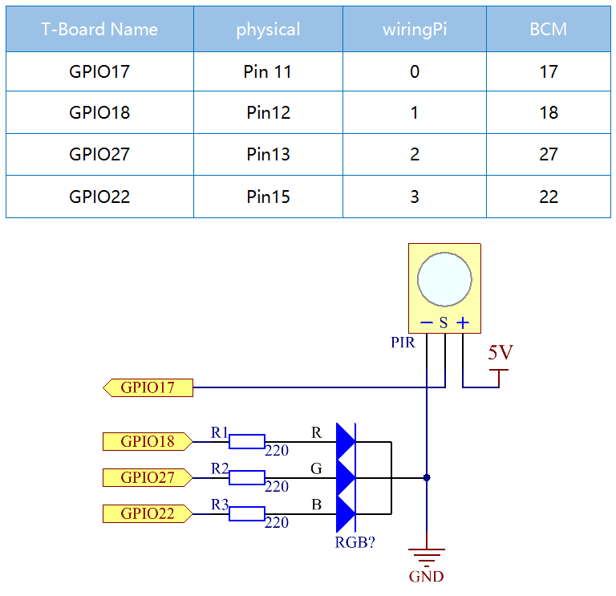

Nota
Ciao, benvenuto nella Community SunFounder Raspberry Pi & Arduino & ESP32 Enthusiasts su Facebook! Approfondisci l’uso di Raspberry Pi, Arduino ed ESP32 con altri appassionati.
Perché unirsi?
Supporto tecnico: Risolvi problemi post-vendita e sfide tecniche con l’aiuto della nostra community e del team.
Impara e condividi: Scambia consigli e tutorial per migliorare le tue competenze.
Anteprime esclusive: Ottieni accesso anticipato a nuove presentazioni di prodotti.
Sconti speciali: Goditi sconti esclusivi sui nostri prodotti più recenti.
Promozioni e omaggi: Partecipa a promozioni e omaggi speciali.
👉 Pronto a esplorare e creare con noi? Clicca su [Qui] e unisciti oggi stesso!
2.2.4 PIR
Introduzione
In questo progetto, costruiremo un dispositivo utilizzando un sensore piroelettrico a infrarossi per il rilevamento del corpo umano. Quando qualcuno si avvicina al LED, questo si accenderà automaticamente. In assenza di movimento, il LED si spegnerà. Questo sensore di movimento a infrarossi è un tipo di sensore capace di rilevare l’infrarosso emesso da esseri umani e animali.
Componenti

Principio
Il sensore PIR rileva la radiazione infrarossa emessa dal calore corporeo, rendendolo adatto per rilevare la presenza di esseri viventi che emettono radiazione termica infrarossa.
Il sensore PIR è suddiviso in due slot collegati a un amplificatore differenziale. Quando un oggetto stazionario si trova di fronte al sensore, i due slot ricevono la stessa quantità di radiazione e l’uscita è zero. Se un oggetto in movimento è davanti al sensore, uno degli slot riceve più radiazione dell’altro, provocando una variazione dell’uscita in alto o in basso. Questa variazione nella tensione di uscita indica la rilevazione di un movimento.

Dopo il collegamento del modulo di rilevamento, segue un periodo di inizializzazione di circa un minuto. Durante questa fase, il modulo potrebbe emettere segnali di uscita per 0~3 volte a intervalli. Successivamente, il modulo entra in modalità standby. È importante evitare che la luce o altre fonti di disturbo interferiscano con la superficie del modulo per evitare attivazioni accidentali dovute a segnali di interferenza. Anche il vento può interferire con il sensore, quindi è preferibile utilizzare il modulo in ambienti senza troppa corrente d’aria.

Regolazione della distanza
Ruotando in senso orario la manopola del potenziometro di regolazione della distanza, il raggio di rilevamento aumenta, fino a un massimo di circa 7 metri. Ruotandola in senso antiorario, la distanza di rilevamento diminuisce fino a un minimo di circa 3 metri.
Regolazione del ritardo
Ruotando in senso orario la manopola del potenziometro di regolazione del ritardo, si aumenta il tempo di rilevamento, con un massimo di ritardo fino a 300 secondi. In senso antiorario, il ritardo diminuisce fino a un minimo di 5 secondi.
Due modalità di attivazione: (selezionabili tramite il ponticello).
H: Modalità di attivazione ripetibile: dopo aver rilevato una persona, il modulo emette un segnale ad alto livello. Durante il periodo di ritardo, se qualcuno entra nel raggio di rilevamento, l’uscita rimarrà a livello alto.
L: Modalità di attivazione non ripetibile: emette un segnale ad alto livello quando rileva una persona. Dopo il ritardo, l’uscita passa automaticamente da alto a basso.
Schema del circuito
Procedure sperimentali
Step 1: Costruire il circuito.

Per gli utenti di C
Step 2: Vai alla cartella del codice.
cd ~/davinci-kit-for-raspberry-pi/c/2.2.4/
Step 3: Compila il codice.
gcc 2.2.4_PIR.c -lwiringPi
Step 4: Esegui il file eseguibile.
sudo ./a.out
Dopo l’esecuzione del codice, il PIR rileva l’ambiente circostante e accende il LED RGB con un colore giallo se rileva qualcuno nelle vicinanze. Ci sono due potenziometri sul modulo PIR: uno per regolare la sensibilità e l’altro per la distanza di rilevamento. Per migliorare il funzionamento del modulo PIR, si consiglia di ruotarli entrambi in senso antiorario fino in fondo.

Nota
Se il codice non funziona o appare l’errore: "wiringPi.h: No such file or directory", consulta la sezione Il codice C non funziona?.
Codice
#include <wiringPi.h>
#include <softPwm.h>
#include <stdio.h>
#define uchar unsigned char
#define pirPin 0 // il PIR è collegato al GPIO0
#define redPin 1
#define greenPin 2
#define bluePin 3
void ledInit(void){
softPwmCreate(redPin, 0, 100);
softPwmCreate(greenPin,0, 100);
softPwmCreate(bluePin, 0, 100);
}
void ledColorSet(uchar r_val, uchar g_val, uchar b_val){
softPwmWrite(redPin, r_val);
softPwmWrite(greenPin, g_val);
softPwmWrite(bluePin, b_val);
}
int main(void)
{
int pir_val;
if(wiringPiSetup() == -1){ // se l'inizializzazione fallisce, stampa un messaggio
printf("setup wiringPi failed !");
return 1;
}
ledInit();
pinMode(pirPin, INPUT);
while(1){
pir_val = digitalRead(pirPin);
if(pir_val == 1){ // se il PIR rileva un livello alto
ledColorSet(0xff,0xff,0x00);
}
else {
ledColorSet(0x00,0x00,0xff);
}
}
return 0;
}
Spiegazione del Codice
void ledInit(void);
void ledColorSet(uchar r_val, uchar g_val, uchar b_val);
Queste funzioni sono usate per impostare il colore del LED RGB. Per ulteriori dettagli, fare riferimento a 1.1.2 LED RGB.
int main(void)
{
int pir_val;
//……
pinMode(pirPin, INPUT);
while(1){
pir_val = digitalRead(pirPin);
if(pir_val == 1){ // se il PIR rileva un livello alto
ledColorSet(0xff,0xff,0x00);
}
else {
ledColorSet(0x00,0x00,0xff);
}
}
return 0;
}
Quando il sensore PIR rileva lo spettro infrarosso umano, il LED RGB emette luce gialla; altrimenti emette luce blu.
Per gli utenti Python
Passaggio 2: Vai alla cartella del codice.
cd ~/davinci-kit-for-raspberry-pi/python/
Passaggio 3: Esegui il file eseguibile.
sudo python3 2.2.4_PIR.py
Dopo l’esecuzione del codice, il sensore PIR rileva l’ambiente circostante e accende il LED RGB con una luce gialla se rileva qualcuno nelle vicinanze. Sul modulo PIR ci sono due potenziometri: uno per regolare la sensibilità e l’altro per la distanza di rilevamento. Per ottenere prestazioni ottimali dal modulo PIR, si consiglia di ruotarli entrambi completamente in senso antiorario.
Codice
Nota
Puoi Modificare/Reimpostare/Copiare/Eseguire/Interrompere il codice qui sotto. Prima di procedere, però, assicurati di trovarti nel percorso del codice sorgente, ad esempio davinci-kit-for-raspberry-pi/python.
import RPi.GPIO as GPIO
import time
rgbPins = {'Red':18, 'Green':27, 'Blue':22}
pirPin = 17 # il sensore PIR è collegato al pin 17
def setup():
global p_R, p_G, p_B
GPIO.setmode(GPIO.BCM) # Imposta la modalità GPIO su numerazione BCM
GPIO.setup(pirPin, GPIO.IN) # Configura pirPin come input
# Imposta tutti i LedPin come output e livello iniziale su Alto (3,3V)
for i in rgbPins:
GPIO.setup(rgbPins[i], GPIO.OUT, initial=GPIO.HIGH)
# Configura ogni LED come canale PWM con frequenza di 2KHz
p_R = GPIO.PWM(rgbPins['Red'], 2000)
p_G = GPIO.PWM(rgbPins['Green'], 2000)
p_B = GPIO.PWM(rgbPins['Blue'], 2000)
# Inizializza il valore di tutti i LED a 0
p_R.start(0)
p_G.start(0)
p_B.start(0)
# Definisce una funzione MAP per mappare i valori, ad esempio da 0~255 a 0~100
def MAP(x, in_min, in_max, out_min, out_max):
return (x - in_min) * (out_max - out_min) / (in_max - in_min) + out_min
# Definisce una funzione per impostare i colori
def setColor(color):
# Configura la luminosità dei tre LED in base al valore colore in ingresso
R_val = (color & 0xFF0000) >> 16
G_val = (color & 0x00FF00) >> 8
B_val = (color & 0x0000FF) >> 0
# Mappa i valori del colore da 0~255 a 0~100
R_val = MAP(R_val, 0, 255, 0, 100)
G_val = MAP(G_val, 0, 255, 0, 100)
B_val = MAP(B_val, 0, 255, 0, 100)
# Assegna il valore del duty cycle mappato al corrispondente canale PWM per cambiare la luminosità
p_R.ChangeDutyCycle(R_val)
p_G.ChangeDutyCycle(G_val)
p_B.ChangeDutyCycle(B_val)
#print ("color_msg: R_val = %s, G_val = %s, B_val = %s"%(R_val, G_val, B_val))
def loop():
while True:
pir_val = GPIO.input(pirPin)
if pir_val==GPIO.HIGH:
setColor(0xFFFF00)
else :
setColor(0x0000FF)
def destroy():
p_R.stop()
p_G.stop()
p_B.stop()
GPIO.cleanup() # Rilascia le risorse
if __name__ == '__main__': # Inizio programma
setup()
try:
loop()
except KeyboardInterrupt: # Quando viene premuto 'Ctrl+C', viene eseguito destroy()
destroy()
Spiegazione del Codice
rgbPins = {'Red':18, 'Green':27, 'Blue':22}
def setup():
global p_R, p_G, p_B
GPIO.setmode(GPIO.BCM)
# ……
for i in rgbPins:
GPIO.setup(rgbPins[i], GPIO.OUT, initial=GPIO.HIGH)
p_R = GPIO.PWM(rgbPins['Red'], 2000)
p_G = GPIO.PWM(rgbPins['Green'], 2000)
p_B = GPIO.PWM(rgbPins['Blue'], 2000)
p_R.start(0)
p_G.start(0)
p_B.start(0)
def MAP(x, in_min, in_max, out_min, out_max):
return (x - in_min) * (out_max - out_min) / (in_max - in_min) + out_min
def setColor(color):
...
Questi codici sono utilizzati per impostare il colore del LED RGB; per maggiori dettagli consulta 1.1.2 LED RGB.
def loop():
while True:
pir_val = GPIO.input(pirPin)
if pir_val==GPIO.HIGH:
setColor(0xFFFF00)
else :
setColor(0x0000FF)
Quando il PIR rileva lo spettro infrarosso di un essere umano, il LED RGB emette luce gialla; altrimenti emette luce blu.
Immagine Dimostrativa